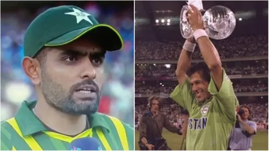
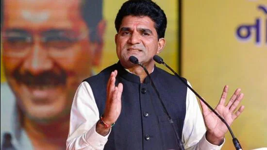
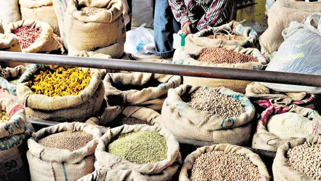
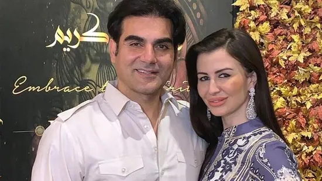

An order by the Punjab home ministry has said that songs which glorify guns and violence should be strictly prohibited, and there should be a complete ban on carrying and displaying weapons at public events, social gatherings, wedding ceremonies and religious places
Gujarat elections 2022: The Aam Aadmi Party (AAP) has been pitching itself as a key challenger in the state.

Several images and videos on social media showed ambulances, fire trucks and large presence of police personnel at the spot. The cause of explosion is not known.
Pakistan vs England, T20 World Cup Highlights: Ben Stokes led England to victory with his first ever T20I half century, helping them get past a fired up Pakistan at the MCG.
Jaya Bachchan and Abhishek Bachchan attended filmmaker Rakesh Kumar's prayer meet on Sunday. Shabana Azmi also paid respects to the late filmmaker.
Actor Kalyani Kurale-Jadhav, best known for her roles in Marathi TV shows Tujhyat Jeev Rangla and Dakkhancha Raja Jyotiba, has died at 32 after a road accident in Kolhapur.
Pakistan faced a five-wicket loss in the final of the T20 World Cup against England, and the side's skipper Babar Azam spoke in detail about the defeat in Melbourne.
Gadhvi, a former Gujarati TV journalist and the party’s national general secretary was named as AAP’s CM face for Gujarat earlier this month after the party carried out a public poll ‘AAP no CM’ before naming their candidate for the CM post
The National Statistical Office, which comes under the ministry of statistics and programme implementation released the CPI data and CFPI data for rural, urban and combined.
Arbaaz Khan spoke about girlfriend Giorgia Andriani in a new interview. The actor, who was previously married to Malaika Arora, called Giorgia a wonderful girl. He also opened up about their age gap.
